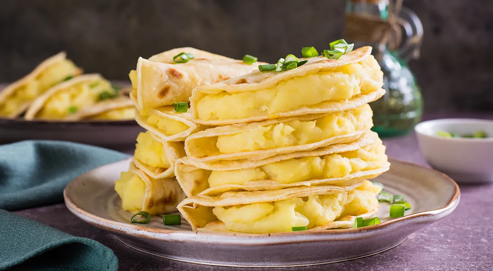

Как приготовить вкусные татарские лепешки кыстыбый

Как приготовить вкусные татарские лепешки кыстыбый? На удивление
простое блюдо обладает магическими качествами — оторваться от него
невозможно. Эти лепешки можно встретить на праздничном застолье, в
дорогом ресторане и в простом кафе, да и как уличную еду. В чем же
секрет такой популярности? На самом деле он в понятных, доступных,
привычных ингредиентах, которые национальная кухня смогла так удачно
сложить вместе в один пирожок с незащипанными краями.